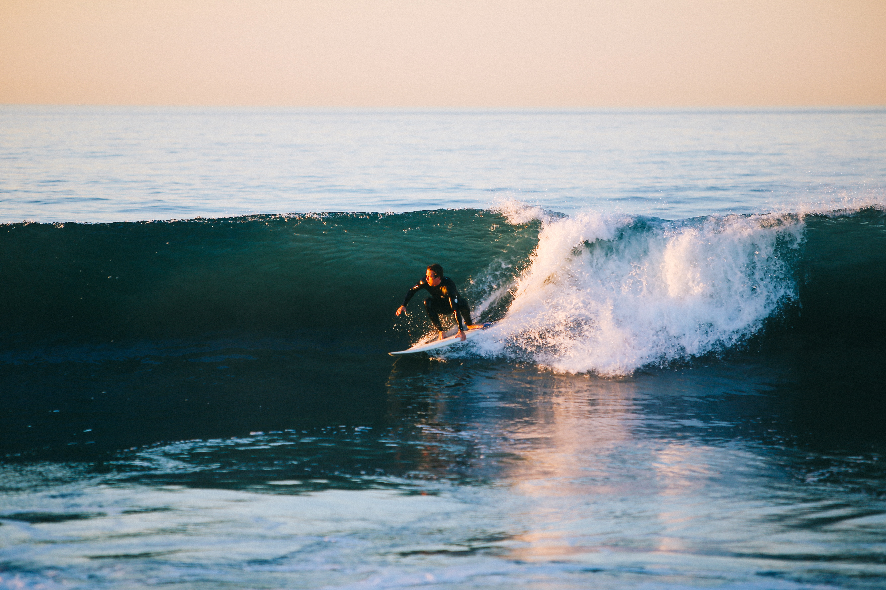

파도타기는 수상 스포츠 중 하나로, 서퍼라 불리는 파도 타는 사람이 파동에 따라 앞을 향해 나아가거나 바람의 방향에 따라 이동하는 것을 의미한다. 보통 서퍼들은 해안쪽으로 이동하는경우가 많다. 서핑에 적합한 파동은 보통 바다에서 이루어지지만, 호수나 강에서도 정상파나 조석해일을 이용해 서핑을 할 수 있다. 하지만 서퍼들은 보트에서 발생하는 인공적인 파동이나 파도풀에서 만들어지는 파도를 이용할 수도 있다.
 "서핑"라는 단어는 자세와는 상관없이 보드로 파도를 타는 행위를 의미한다. 보드에는 여러 가지 종류가 있다. 폴리네시아 문화권에서 알라이아나 파이포 또는 다른 종류의 배를 이용해 서핑을 했으며 그들의 배나 무릎으로도 파도를 탔다.dddddddddddddddddddddddddddd줄바꿈
김규현